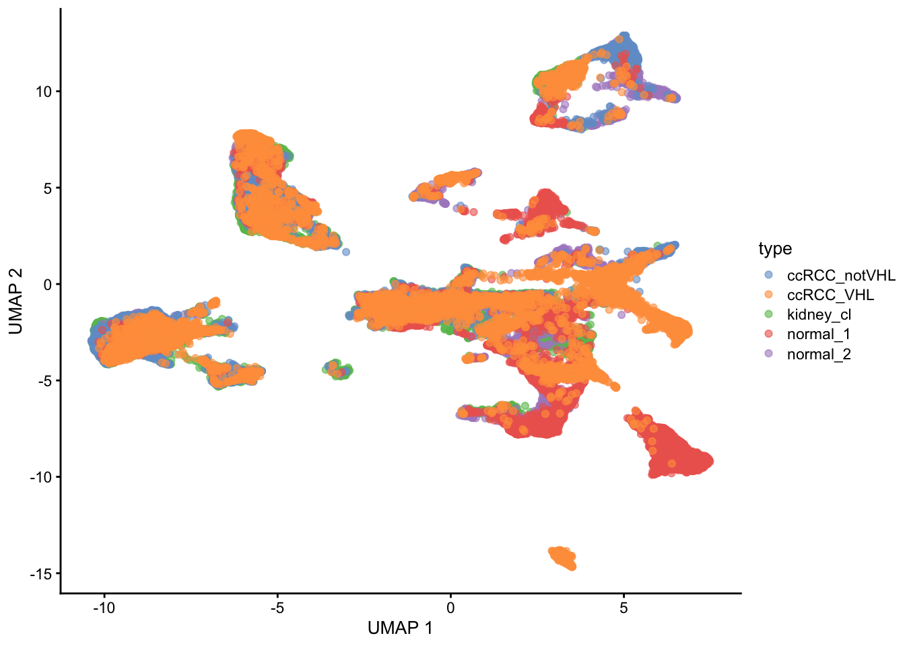
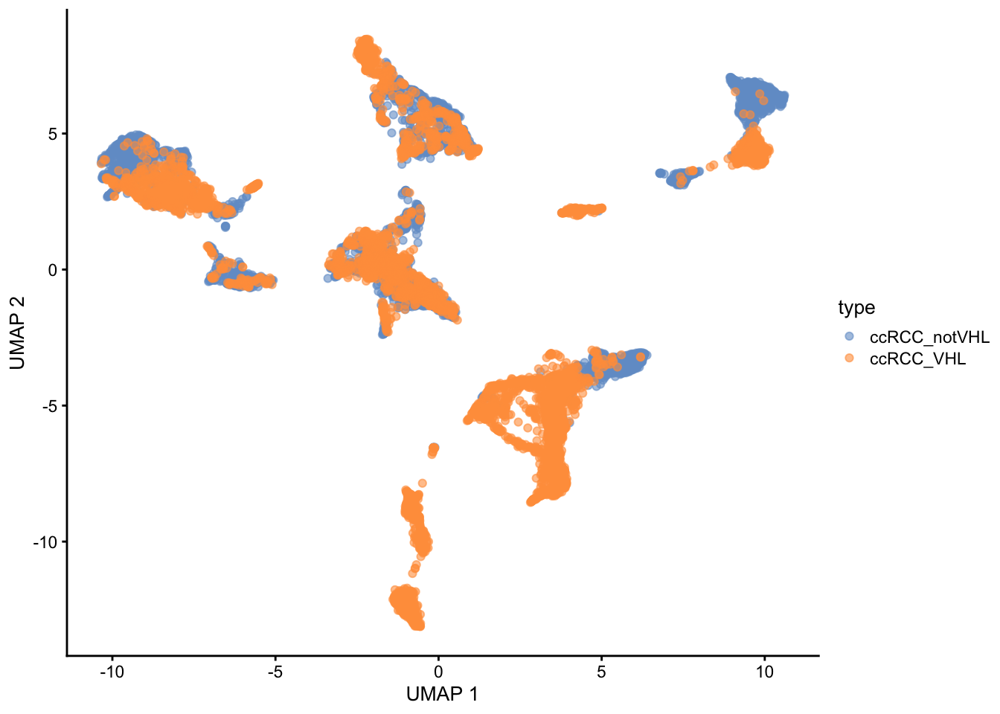
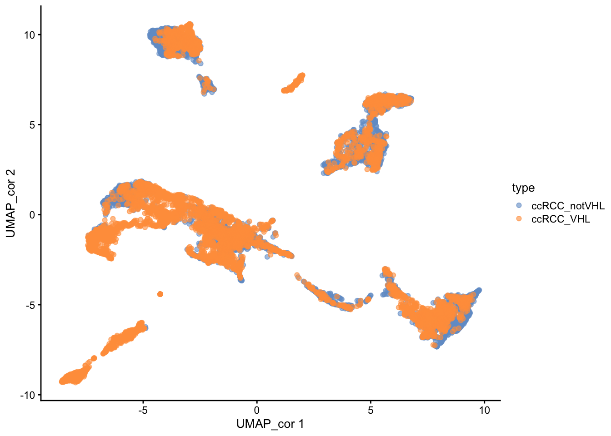
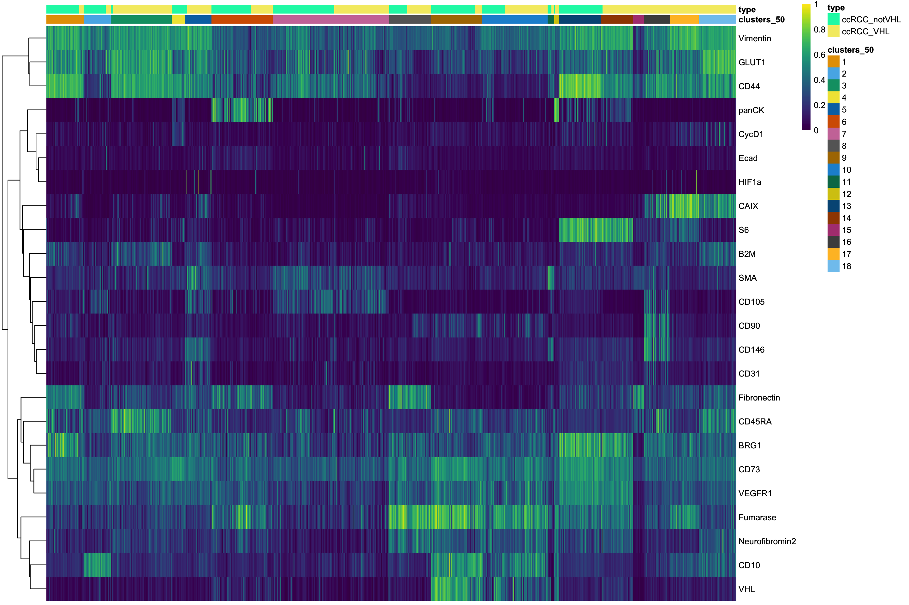
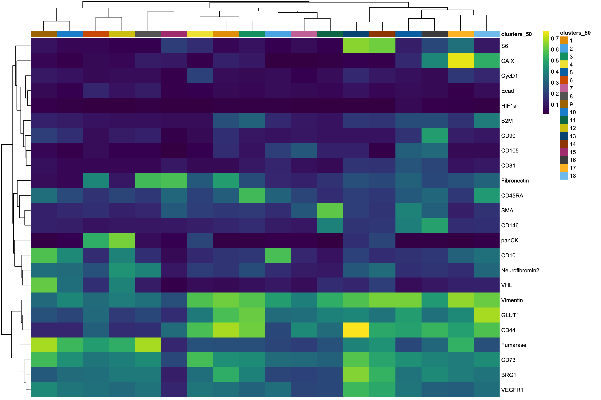
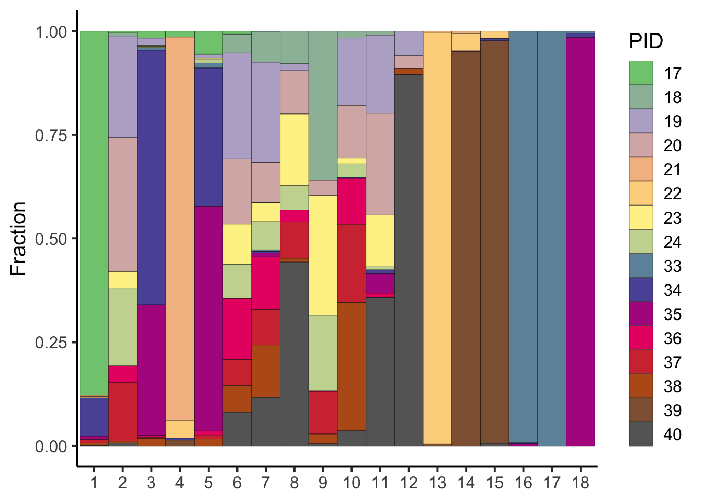
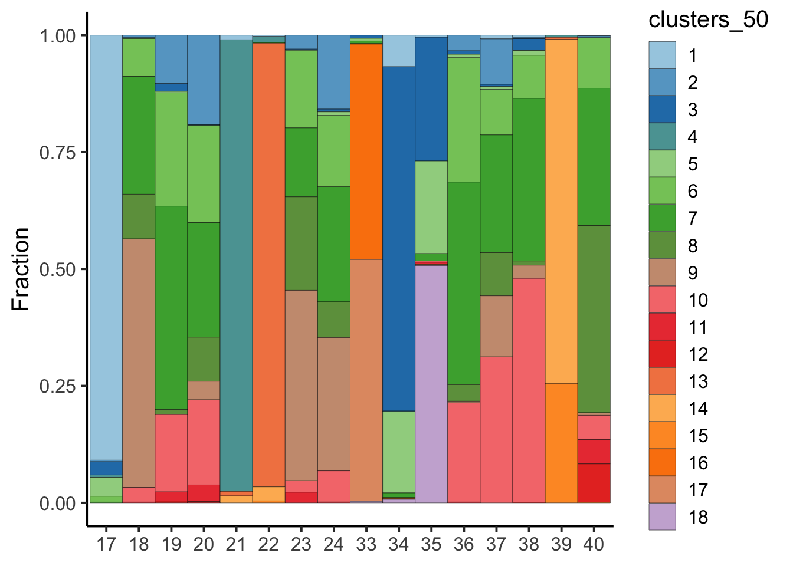

02_singlecell_analysis_tp
Lasse Meyer
1/24/2022
Last updated: 2022-03-08
Checks: 6 1
Knit directory: IMC/
This reproducible R Markdown analysis was created with workflowr (version 1.7.0). The Checks tab describes the reproducibility checks that were applied when the results were created. The Past versions tab lists the development history.
The R Markdown is untracked by Git. To know which version of the R Markdown file created these results, you’ll want to first commit it to the Git repo. If you’re still working on the analysis, you can ignore this warning. When you’re finished, you can run wflow_publish to commit the R Markdown file and build the HTML.
Great job! The global environment was empty. Objects defined in the global environment can affect the analysis in your R Markdown file in unknown ways. For reproduciblity it’s best to always run the code in an empty environment.
The command set.seed(20220112) was run prior to running the code in the R Markdown file. Setting a seed ensures that any results that rely on randomness, e.g. subsampling or permutations, are reproducible.
Great job! Recording the operating system, R version, and package versions is critical for reproducibility.
Nice! There were no cached chunks for this analysis, so you can be confident that you successfully produced the results during this run.
Great job! Using relative paths to the files within your workflowr project makes it easier to run your code on other machines.
Great! You are using Git for version control. Tracking code development and connecting the code version to the results is critical for reproducibility.
The results in this page were generated with repository version afa2271. See the Past versions tab to see a history of the changes made to the R Markdown and HTML files.
Note that you need to be careful to ensure that all relevant files for the analysis have been committed to Git prior to generating the results (you can use wflow_publish or wflow_git_commit). workflowr only checks the R Markdown file, but you know if there are other scripts or data files that it depends on. Below is the status of the Git repository when the results were generated:
Ignored files:
Ignored: .DS_Store
Ignored: IMC/.DS_Store
Ignored: IMC/.Rhistory
Ignored: IMC/.Rproj.user/
Ignored: IMC/analysis/.DS_Store
Ignored: IMC/analysis/.Rhistory
Ignored: IMC/analysis/figure/
Ignored: Non_IMC/.DS_Store
Ignored: Non_IMC/.Rhistory
Ignored: Non_IMC/.Rproj.user/
Ignored: Non_IMC/analysis/.DS_Store
Ignored: Non_IMC/analysis/.RData
Ignored: Non_IMC/analysis/.Rhistory
Ignored: Non_IMC/data/.DS_Store
Ignored: Non_IMC/docs/.DS_Store
Ignored: Non_IMC/docs/figure/.DS_Store
Untracked files:
Untracked: IMC/analysis/00_singlecell_batchcorrection.Rmd
Untracked: IMC/analysis/01_lib_read_data.Rmd
Untracked: IMC/analysis/02_spillover_correction.Rmd
Untracked: IMC/analysis/03_QC.Rmd
Untracked: IMC/analysis/04_singlecell_analysis.Rmd
Untracked: IMC/analysis/IMMUCAN_RCC_singlecell_analysis.Rmd
Untracked: IMC/analysis/TP_01_lib_read_data.Rmd
Untracked: IMC/analysis/TP_02_singlecell_analysis.Rmd
Unstaged changes:
Deleted: IMC/analysis/04_singlecell_analysis_IMMUCAN.Rmd
Deleted: IMC/analysis/05_astir.Rmd
Modified: Non_IMC/analysis/Metadata_Update.Rmd
Deleted: Non_IMC/docs/figure/Metadata_ccRCC.Rmd/reproduce birch-1.png
Deleted: Non_IMC/docs/figure/Metadata_ccRCC.Rmd/reproduce birch-2.png
Deleted: Non_IMC/docs/figure/Metadata_ccRCC.Rmd/reproduce birch-3.png
Deleted: Non_IMC/docs/figure/Metadata_ccRCC.Rmd/reproduce birch-4.png
Deleted: Non_IMC/docs/figure/Metadata_ccRCC.Rmd/viz-1.png
Note that any generated files, e.g. HTML, png, CSS, etc., are not included in this status report because it is ok for generated content to have uncommitted changes.
There are no past versions. Publish this analysis with wflow_publish() to start tracking its development.
Here, I will perform analysis on the single-cell level from RCC tumor pilot data.
#Load all necessary libraries
library(scater)
library(batchelor)
library(tidyverse)
library(Rphenograph)
library(bluster)
library(scran)
library(RColorBrewer)
library(foreach)
library(clustree)
library(ComplexHeatmap)
library(viridis)
library(dittoSeq)
library(easyalluvial)
library(caret)
library(mclust)
library(scuttle)
library(cowplot)
sce <- readRDS("/Volumes/rcc_volume/RCC/IMC/sce_tumorpilot.rds")Dimensionality reduction
First, I will visualize the cells in low-dimensional space. If batch effects seem to be present refer to the batch-correction script here or see below.
set.seed(22)
sce <- runUMAP(sce, subset_row = rowData(sce)$use_channel_2,exprs_values = "exprs")
plotReducedDim(sce, dimred = "UMAP", colour_by = "type")
Marker expression visualization
Next, I will visualize single-cell marker expression.
#Visualize all markers at once
all_plots <- lapply(c(rownames(sce)[rowData(sce)$use_channel_2]),
function(x){
p <- plotReducedDim(sce, dimred = "UMAP",
colour_by = x,
by_exprs_values = "exprs",
point_size = 0.5)
return(p)
})
plot_grid(plotlist = all_plots)
Next: Filter for ccRCC samples only.
sce <- sce[,sce$type == c("ccRCC_VHL","ccRCC_notVHL")]Dimensionality reduction
First, I will visualize the cells in low-dimensional space. If batch effects seem to be present refer to the batch-correction script here.
set.seed(22)
sce <- runUMAP(sce, subset_row = rowData(sce)$use_channel_2,exprs_values = "exprs")
plotReducedDim(sce, dimred = "UMAP", colour_by = "type")
Optional: Batch correction
If batch/patient specific-effects are present, I can perform batch correction with the fastMNN(Mutual nearest neighbors) from the batchelor package.
BE AWARE: In general, cell-based analyses are safe to apply on corrected data (e.g. clustering); indeed, the whole purpose of the correction is to place all cells in the same coordinate space. However, the same cannot be easily said for gene-based procedures like DE analyses or marker gene detection. See here for more information.
# Run MNN for sample ID correction
set.seed(22)
mnn.out <- fastMNN(sce, batch = sce$type, d=NA, k=20, assay.type = "exprs",subset.row=rowData(sce)$use_channel_2)
#the corrected matrix contains low-dimensional corrected coordinates for all cells, which we will use in "cell-based" downstream analyses.
dim(reducedDim(mnn.out, "corrected"))[1] 10906 24reducedDim(sce,"corrected") <- reducedDim(mnn.out, "corrected")
set.seed(22)
sce <- runUMAP(sce, dimred="corrected",name = "UMAP_cor")
#Compare before and after
plotReducedDim(sce, dimred = "UMAP", colour_by = "type")
plotReducedDim(sce, dimred = "UMAP_cor", colour_by = "type")
###Save RDS object after MNN
saveRDS(sce, "/Volumes/rcc_volume/RCC/IMC/sce_tumorpilot_MNN.rds")Marker expression visualization
Next, I will visualize single-cell marker expression.
#Visualize all markers at once
all_plots <- lapply(c(rownames(sce)[rowData(sce)$use_channel_2]),
function(x){
p <- plotReducedDim(sce, dimred = "UMAP",
colour_by = x,
by_exprs_values = "exprs",
point_size = 0.5)
return(p)
})
plot_grid(plotlist = all_plots)
Cell identity assignments
Various strategies for cell type assignment are possible. Here I will test following strategies: 1. “Cluster & Interpret” - Graph-based clustering (Stability testing) -> Marker gene scoring -> Manual annotation 2. ASTIR model - Probabilistic assignment to a priori known cell types 3. Gaussian Mixture Models (GMM) - Clustering-based approach for well defined cell type markers 4. Gate & Classify - Cytomapper-based gating for subset of samples (“Ground truth”) -> Train random forest classifier -> Classify new data
1. Cluster & Interpret
Here I will use Rphenograph (Jaccard-based weights, Louvain clustering as community detection algorithm) and a scran-like pipeline (rank-based weights, Walktrap clustering) to cluster the cells.
I will use a range of resolution parameters (k=50,100,150,200) and compare cluster results and stability using clustree and silhouette width/purity estimates using bluster.
#k=50
set.seed(22)
out <- Rphenograph(t(assay(sce,"exprs")),
k = 50) Finding nearest neighbors...DONE ~ 2.191 s
Compute jaccard coefficient between nearest-neighbor sets...DONE ~ 5.486 s
Build undirected graph from the weighted links...DONE ~ 2.533 s
Run louvain clustering on the graph ...DONE ~ 1.143 s
Return a community class
-Modularity value: 0.8820812
-Number of clusters: 18clusters_50 <- factor(membership(out[[2]]))
sce$clusters_50 <- clusters_50
col_clust <- colorRampPalette(brewer.pal(9, "Paired"))(length(unique(sce$clusters_50)))
plotReducedDim(sce, dimred = "UMAP", colour_by = "clusters_50")+
scale_color_manual(values = col_clust)
Visualization of cluster marker expression
Count Normalization: For visualization I will perform A. Min-max(0,1) normalization on the arcsinh (cofactor = 1) transformed counts. (Other options: Z-scores, Winsoring/Clipping)
#Min-Max [0,1] normalization of arcsinh-transformed counts
assay(sce, "min_max") <- assay(sce, "exprs") - rowMins(assay(sce, "exprs"))
assay(sce, "min_max") <- assay(sce, "min_max") / (rowMaxs(assay(sce, "exprs")) - rowMins(assay(sce, "exprs")))
#Heatmap visualization (all cells)
dittoHeatmap(sce, genes = rownames(sce)[rowData(sce)$use_channel_2],
assay = "min_max", cluster_cols = F, order.by = "clusters_50" , scale = "none",
heatmap.colors = viridis(100), annot.by = c("clusters_50","type"))
#Aggregrate across cells with the mean (median is also possible)
mean_sce <- aggregateAcrossCells(sce, ids = sce$clusters_50,
statistics = "mean",
use.assay.type = "min_max",
subset.row = rowData(sce)$use_channel_2)
dittoHeatmap(mean_sce, genes = rownames(mean_sce),
assay = "min_max", cluster_cols = T, scale = "none",
heatmap.colors = viridis(100), annot.by = c("clusters_50"))
#Fraction of PID per cluster
cluster_PID <- colData(sce) %>% as.data.frame() %>% select(PID,type,clusters_50) %>% group_by(clusters_50,PID) %>% summarise(n_cells = n()) %>% mutate(fraction = n_cells/sum(n_cells))
col_PID <- colorRampPalette(brewer.pal(9, "Accent"))(length(unique(cluster_PID$PID)))
ggplot(cluster_PID) +
geom_tile(color = "black",aes(clusters_50, fraction, fill = PID), position = "stack")+
scale_fill_manual(values = col_PID) +
theme_classic(base_size = 15)+
ylab("Fraction")+
theme(axis.title.x = element_blank())
#Fraction of cluster per PID
cluster_clus <- colData(sce) %>% as.data.frame() %>% select(PID,type,clusters_50) %>% group_by(PID,clusters_50) %>% summarise(n_cells = n()) %>% mutate(fraction = n_cells/sum(n_cells))
ggplot(cluster_clus) +
geom_tile(color = "black",aes(PID, fraction, fill = clusters_50), position = "stack")+
scale_fill_manual(values=col_clust) +
theme_classic(base_size = 15)+
ylab("Fraction")+
theme(axis.title.x = element_blank())
sessionInfo()R version 4.1.2 (2021-11-01)
Platform: x86_64-apple-darwin17.0 (64-bit)
Running under: macOS Big Sur 10.16
Matrix products: default
BLAS: /Library/Frameworks/R.framework/Versions/4.1/Resources/lib/libRblas.0.dylib
LAPACK: /Library/Frameworks/R.framework/Versions/4.1/Resources/lib/libRlapack.dylib
locale:
[1] en_US.UTF-8/en_US.UTF-8/en_US.UTF-8/C/en_US.UTF-8/en_US.UTF-8
attached base packages:
[1] grid stats4 stats graphics grDevices utils datasets
[8] methods base
other attached packages:
[1] cowplot_1.1.1 mclust_5.4.9
[3] caret_6.0-90 lattice_0.20-45
[5] easyalluvial_0.3.0 dittoSeq_1.6.0
[7] viridis_0.6.2 viridisLite_0.4.0
[9] ComplexHeatmap_2.10.0 clustree_0.4.4
[11] ggraph_2.0.5 foreach_1.5.2
[13] RColorBrewer_1.1-2 scran_1.22.1
[15] bluster_1.4.0 Rphenograph_0.99.1
[17] igraph_1.2.11 forcats_0.5.1
[19] stringr_1.4.0 dplyr_1.0.8
[21] purrr_0.3.4 readr_2.1.2
[23] tidyr_1.2.0 tibble_3.1.6
[25] tidyverse_1.3.1 batchelor_1.10.0
[27] scater_1.22.0 ggplot2_3.3.5
[29] scuttle_1.4.0 SingleCellExperiment_1.16.0
[31] SummarizedExperiment_1.24.0 Biobase_2.54.0
[33] GenomicRanges_1.46.1 GenomeInfoDb_1.30.1
[35] IRanges_2.28.0 S4Vectors_0.32.3
[37] BiocGenerics_0.40.0 MatrixGenerics_1.6.0
[39] matrixStats_0.61.0 workflowr_1.7.0
loaded via a namespace (and not attached):
[1] utf8_1.2.2 tidyselect_1.1.1
[3] BiocParallel_1.28.3 pROC_1.18.0
[5] munsell_0.5.0 ScaledMatrix_1.2.0
[7] codetools_0.2-18 statmod_1.4.36
[9] future_1.23.0 withr_2.4.3
[11] colorspace_2.0-2 progressr_0.10.0
[13] highr_0.9 knitr_1.37
[15] ggalluvial_0.12.3 rstudioapi_0.13
[17] listenv_0.8.0 labeling_0.4.2
[19] git2r_0.29.0 GenomeInfoDbData_1.2.7
[21] polyclip_1.10-0 farver_2.1.0
[23] pheatmap_1.0.12 rprojroot_2.0.2
[25] parallelly_1.30.0 vctrs_0.3.8
[27] generics_0.1.2 ipred_0.9-12
[29] xfun_0.29 R6_2.5.1
[31] doParallel_1.0.17 ggbeeswarm_0.6.0
[33] clue_0.3-60 graphlayouts_0.8.0
[35] rsvd_1.0.5 locfit_1.5-9.4
[37] bitops_1.0-7 DelayedArray_0.20.0
[39] assertthat_0.2.1 promises_1.2.0.1
[41] scales_1.1.1 nnet_7.3-16
[43] beeswarm_0.4.0 gtable_0.3.0
[45] beachmat_2.10.0 globals_0.14.0
[47] processx_3.5.2 tidygraph_1.2.0
[49] timeDate_3043.102 rlang_1.0.1
[51] GlobalOptions_0.1.2 splines_4.1.2
[53] ModelMetrics_1.2.2.2 broom_0.7.12
[55] reshape2_1.4.4 yaml_2.2.2
[57] modelr_0.1.8 backports_1.4.1
[59] httpuv_1.6.5 tools_4.1.2
[61] lava_1.6.10 ellipsis_0.3.2
[63] jquerylib_0.1.4 ggridges_0.5.3
[65] Rcpp_1.0.8 plyr_1.8.6
[67] sparseMatrixStats_1.6.0 zlibbioc_1.40.0
[69] RCurl_1.98-1.6 ps_1.6.0
[71] rpart_4.1-15 GetoptLong_1.0.5
[73] haven_2.4.3 ggrepel_0.9.1
[75] cluster_2.1.2 fs_1.5.2
[77] magrittr_2.0.2 RSpectra_0.16-0
[79] data.table_1.14.2 ResidualMatrix_1.4.0
[81] circlize_0.4.14 reprex_2.0.1
[83] RANN_2.6.1 whisker_0.4
[85] hms_1.1.1 evaluate_0.14
[87] readxl_1.3.1 gridExtra_2.3
[89] shape_1.4.6 compiler_4.1.2
[91] crayon_1.5.0 htmltools_0.5.2
[93] later_1.3.0 tzdb_0.2.0
[95] lubridate_1.8.0 DBI_1.1.2
[97] tweenr_1.0.2 dbplyr_2.1.1
[99] MASS_7.3-54 Matrix_1.3-4
[101] cli_3.2.0 parallel_4.1.2
[103] metapod_1.2.0 gower_1.0.0
[105] pkgconfig_2.0.3 getPass_0.2-2
[107] recipes_0.1.17 xml2_1.3.3
[109] vipor_0.4.5 bslib_0.3.1
[111] dqrng_0.3.0 XVector_0.34.0
[113] prodlim_2019.11.13 rvest_1.0.2
[115] callr_3.7.0 digest_0.6.29
[117] RcppAnnoy_0.0.19 rmarkdown_2.11
[119] cellranger_1.1.0 uwot_0.1.11
[121] edgeR_3.36.0 DelayedMatrixStats_1.16.0
[123] rjson_0.2.21 nlme_3.1-153
[125] lifecycle_1.0.1 jsonlite_1.7.3
[127] BiocNeighbors_1.12.0 limma_3.50.0
[129] fansi_1.0.2 pillar_1.7.0
[131] fastmap_1.1.0 httr_1.4.2
[133] survival_3.2-13 glue_1.6.1
[135] png_0.1-7 iterators_1.0.14
[137] ggforce_0.3.3 class_7.3-19
[139] stringi_1.7.6 sass_0.4.0
[141] BiocSingular_1.10.0 future.apply_1.8.1
[143] irlba_2.3.5